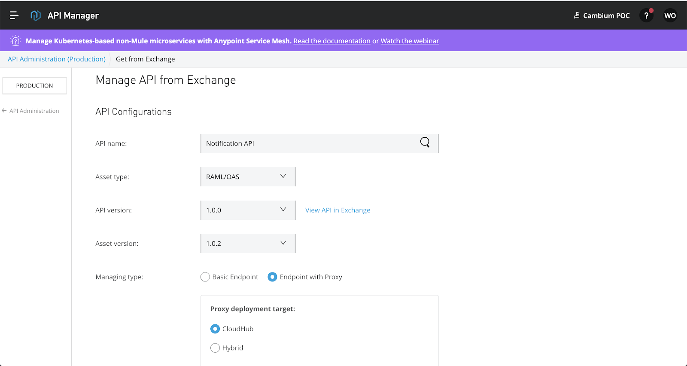
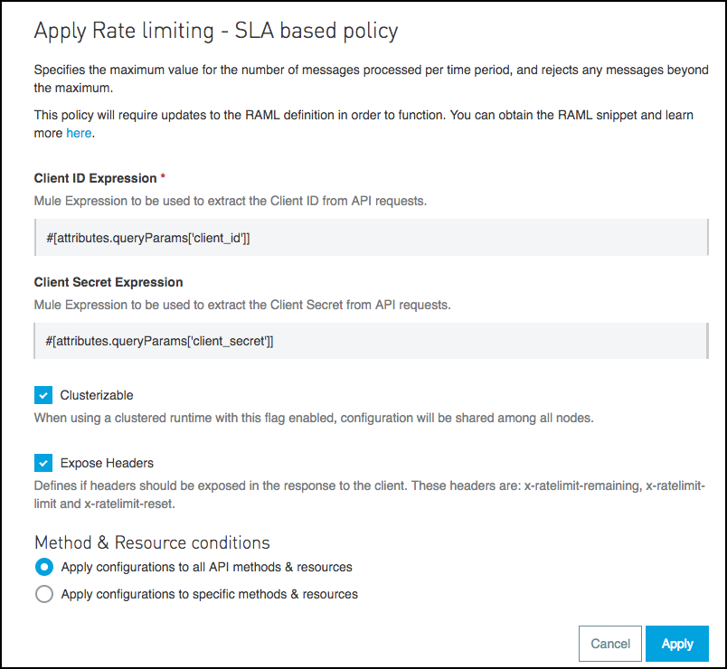

Last updated: 2020-11-14
What you'll build
In this set of labs, you will build a Notification API that uses Anypoint MQ to send notifications to multiple channels. You will begin by designing an API specification, then you will implement the API, and finally you will proxy the API and apply a rate-limiting SLA policy to it.
What you'll need
- Invite to the shared workshop environment which can be found in your email
- Download Anypoint Studio
- Download Postman or a REST Client
Begin by navigating to the Anypoint Exchange to view existing assets within the organization and provided by MuleSoft. Use the menu on the left hand side to view assets provided by MuleSoft or in a specific business group. Use the search bar to find relevant connectors, templates, and examples.
Navigate to Design Center
Select "Create New", "Create API Specification"
Title the specification and select Visual Editor
Title the API, add Version, and description using the boxes. You will notice that RAML is populating in the right hand column. Toggle with OAS on the bottom of the page on the right.
Next, Navigate to "Resources" and select the "+" to add a new resource
Now that we have seen the visual editor, we will move to the code editor to finish the specification. Select "Edit RAML" on the upper right side. When the pop-up appears, select "Yes, send me to the text editor" and "Continue"
Once in the text editor, delete the existing text and copy and paste the following snippet into the body.
#%RAML 1.0
title: notification-sapi
description: Asyncronous API for pushing notifications out. Notifications are consumed by Anypint MQ
types:
Notification:
type: object
properties:
id?:
type: string
priority:
enum:
- High
- Standard
- Log
groupId: string | number
message: string
status?:
enum:
- pending
- complete
- failed
/notification:
get:
description: Returns a list of notifications
queryParameters:
status:
description: Filter by status
type: string
required: false
responses:
200:
body:
application/json:
type: Notification[]
example:
-
id: 5f7486a192ea33fe3e2f08b9
status: pending
message: This is a sample notification
priority: High
groupId: 1
-
id: 5f74939b92ea33fe3e2f08c6
status: complete
message: This is a sample notification
priority: Log
groupId: 0
post:
description: Create a new noitification
body:
application/json:
type: Notification
example:
message: This is a test notification
priority: Standard
groupId: 1
responses:
204:
description: Notification has been created
body:
application/json:
example: {
"id": "5f7486a192ea33fe3e2f08b9",
"status": "pending"
}
/{id}:
get:
description: Returns the status of the notification
queryParameters:
details:
description: By default, only the status of the notification is returned. For complete information, include ?details=true
type: boolean
required: false
default: false
responses:
200:
body:
application/json:
example: { "status": "pending" }
404:
description: Notification does not existUse the Mocking Service by toggling the switch on the upper right hand corner. Then select "Try It." This creates a live endpoint where a developer can understand the behavior of the API prior to implementing.
Click the "Send" button to send the GET request.
Scroll to view response on the right hand side of the window. This will show the mocked data that is available in the specification.
Once you are finished developing the specification, you can publish to exchange by clicking the "Publish" button on the upper right hand corner. Select "Publish to Exchange" on the drop down.
Provide an Asset Version number (1.0.0) and am API Version number (1.0.0) and click "Publish to Exchange." This will create an asset in Exchange that we can share with our team, update, document and later import into Anypoint Studio for implementation.
Once the API is published, navigate to exchange by clicking the link in the pop-up. This will bring you to the API page where we can add a description of the API and use the mocking service.
Anypoint MQ is a multi-tenant, cloud messaging service that enables customers to perform advanced asynchronous messaging scenarios between their applications. We will be creating 4 queues and 1 exchange during this exercise
Navigate to Anypoint MQ using the menu on the left hand side of the page.
Click the blue + button on the upper right, and begin by selecting "Queue."
We will start by creating a notifications-email queue. Please title the queue with your initials or name at the beginning, initials-notifications-email. Label the queue, leave the rest of the fields as they are and select "Create." Repeat this process for the notifications-log queue, labeling it initials-notifications-log.
Next click on the blue + button and select "Exchange." We will be creating an exchange titled "initials-notifications."
Select your notifications-email and notifications-log queues by clicking the corresponding checkboxes next to the queue names. Then click "Save Changes"
The final two queues we will create are FIFO queues. Begin by creating our deadletter queue. First click the blue + and select FIFO queue. Title the queue as "initials-sfdc-account-sync-dlq." Click Create.
Next, click on the blue + button and FIFO queue to create another queue. Title this one as "initials-sfdc-account-sync." Then toggle the switch that says "Assign a Dead Letter Queue" to "On." Using the dropdown menu, select your deadletter queue that you created in the last step.
We have now created all of our queues for this project.
In order to demonstrate mule application testing and deployment with a message queue and a database, we first have to have an actual application to work with! We will be using three examples in the workshop exchange.
Import Project
- Open Anypoint Studio
- Set your workspace to
anypoint-mq-demo - In the Menu bar select File -> New -> Project from Example
- Search for "notification-sapi" and click on the example
- Click
Openin the top right - Repeat import process for "notification-process" and "mongo-to-sfdc-queue-sync"
Making Updates to the Project
Because we created our own queues, we will be making some updates to the project before debugging and running the application. First, we will make changes to our .yaml files.
Using the package explorer on the lefthand side of your Anypoint Studio, click the project name (notification-sapi) and then open src/main/resources, and double click on config.secure.sandbox.yaml.

Your .yaml file will look something like this
Please change your exchange name to the one you created in Anypoint MQ earlier. Likely the name is "initials-notifications."
Please save the file by using cmd+S or the save all button at the top of your Studio
Repeat this process for "notification-process" API
- Open your .yaml file by clicking on "notification-process" -> src/main/resources -> config.secure.sandbox
- Rename anypoint: mq: exchange: to "initials-notifications"
- Save the .yaml file
At this point, we will now move onto making changes inside of our flows. You can close the .yaml files.
Next we will open the notification-process.xml file. This can be found in the package explorer under notification-process -> src/main/mule -> notification-process.xml. Once the file is opened, it will look something like this:
You will notice multiple flows already built out from components in the mule palette on the right-hand side of Studio. We will be making some updates to the flows based on our queues created.
We already updated our MQ configuration in our .yaml file but will need to update the queues that we are pointing to. Begin by clicking the subscriber component in the notification-log-queue flow. You will see the configuration details at the bottom, and we will be changing the queue name.
Under "General" change the Queue name to the log queue that you created. It should be "initials-notifications-log"
Now repeat this process for the notification-email queue
- Click the subscriber component in the notification-email queue
- Update the queue name to your queue name, "initials-notifications-email"
Once complete, click out of the component onto the canvas.
Next, we will update the email that the notification is sent to. In the notification-email-queue flow, there is a subscriber component, followed by a set variable and then a choice router. For the sake of this demonstration, we hardcoded the emails into a transform message.
Please select the transform message titled "get email recipients." The transform message is very flexible and can be used for creating logic, mapping fields, and in this case, setting variables. Under the array titled "1," feel free to add your email address. This way, you will be notified by email when the notification is sent. Be sure to add a comma after "croebuck@mulesoft.com" and put your email address in quotation marks.
Once again, please click out of the flow and save your work. Leave the file open as we will be returning to it in a moment.
Next, please open the notification-sapi.xml file. In the package explorer, select notification-sapi -> src/main/mule -> notification-sapi.xml. This project is the implementation of our previously created specification. You will notice the API Kit router and error handling. There are three implemented methods, a GET notification, a GET notification by ID, and a POST notification.
The GET notification is the first flow and uses the mongodb connector to retrieve notifications. The transform message then maps the output to json.
The GET Notification by ID flow is next. First is a Set Variable which receives the ID input. Next is a try scope which provides validation. Inside the scope is the mongodb connector which finds the notification based on the provided ID. If it doesn't exist, you will go to the error handling which will create a "Notification doesn't Exist" message. After this validation, the payload is transformed to json and output.
The third flow is the POST Notification, where we will create the notification. This uses a Set Variable to store the notification, the mongodb connector to insert into database, a publish component to publish to the queue, and a set payload which sets the notification ID.
Making Updates to the Project
Next, we are going to walk through these projects step by step. First set a breakpoint on our notification-sapi.xml file. Please right-click on the Set Variable "store notification" in the POST Notification flow. Click on "set breakpoint" at the bottom of the dropdown.
Now, navigate back to the notification-process.xml file. We will be setting two breakpoints on this project. First is on the Logger in the notification-log-queue. The second is on the Set Variable titled "store messageId" in the notification-email-queue.
- Right-click on component
- Select Add Breakpoint
Once finished, it should look like this:
Running the Project
Now we will run the projects and step through the process across both APIs. First, go to the Run menu and select Debug Considerations.

Once in Debug Considerations, select both projects, in the "Mule Projects to Launch" box. Then select Debug.
The project will now begin to run. When the pop-up appears asking to "Confirm Perspective Switch," select Yes
Once in debug mode, your screen should look like this. Navigate to the "Console" tab on the bottom left and you will notice that both projects have deployed.
At this point, both projects are now running on an embedded mule runtime on your local machine. We will now test this project. Begin by selecting the "APIkit Consoles" tab on the bottom next to "Console" and "Problems." Then, click "Open console." This will bring you to a browser pointing to localhost.

Now we will test the POST Notification method. Begin by selecting POST /notification.
Feel free to change the message in the text box on the right-hand side so that it is recognizable to you (add initials, say something completely different).
Now, click SEND.
At this point, you will see that the request as been sent:
Now, move back to Studio to walk through the APIs. Since we sent a POST, scroll to the bottom of the file and you will see that it has stopped because of the breakpoint. In the "Variables and Watches" box at the top of the screen, you will see your Payload, which is the message you sent.
On the upper right hand corner, you will see a rounded arrow. Click this arrow to step through the project.
Once you are at the Publish component, you will see the payload changes to the ID. Forward click once to your Set Payload. At this point, you can move over to your MQ and you will see that there is a message "In Flight" under your "initials-notifications-log" queue.
Now move back to studio and continue to walk through your project. You will next move over to your other project, the notification-process API. Once you are in notification-log-queue and have stepped through Publish, you will see a notification posted into your log in the console.
Next, you will step through the notification-email-queue flow. Once you have entered that flow, you can go back to your MQ and see that there will be 1 message "In Flight" in your "initials-notifications-email" queue.
Move back to Studio and continue stepping through the API. Please note that once you have made it through the noticiation-email-queue flow that you will receive an email to your inbox if you had added it in the transform message earlier. Move back to your API Console and you will get a 201 Created with an ID number and status.
Back in studio, next, you will move into the notification-processFlow where you will update Mongodb that the notification will now have a status as complete.
To test this, go back to your API Console and copy the ID provided. Move to the /notification/{id} GET and paste the ID into the id field. Click SEND and at this point you will see that the status was updated to "complete"
Feel free to play with these flows again. Send another POST /notification and check the MQs.
Deploying to CloudHub
Now we will deploy the projects to CloudHub. First, right click on the project name in the package explorer. Go to Anypoint Platform -> Deploy to CloudHub
Choose Environment, Production
Next, change the name to "initials-notification-process." Note that we will be deploying to Mule's Managed iPaaS, CloudHub which has vertical and horizontal scaling capabilities (worker size, # of workers). Then click "Deploy Application.
Repeat the process for the notification-sapi.
Runtime Manager
After you have deployed both projects move over to Runtime Manager in the Anypoint Platform.
Once in Runtime Manager, you may need to move to your "Production" Environment by using the box on the left hand side. Here in Runtime Manager you can see your running applications and manage your servers and create alerts. Feel free to click around and create an alert.
Managing your API
Proxying the API
http://cr-notification-sapi.us-e2.cloudhub.io/api/notification
To create the proxy we are going to get the API Definition from Exchange.
- Now let's configure an API proxy gateway for this API. Back in the API Administration page, click on Manage API and select Manage API from Exchange

- Configure the API with the following information:
- API name: Notification API. Notice when you start to write the name, the field is autocompleted.
- API version: Select from the drop down list 1.0.0.
- Asset version: Select from the drop down list 1.0.0.
- Managing type: Select Endpoint with proxy.
- Implementation URI: http://cr-notification-sapi.us-e2.cloudhub.io/api/
- Proxy deployment target: CloudHub
- Path:
/

- Press Advanced options and configure:
- Check the box for managing an API in Mule4 and above
- Advanced options
- API instance label:
<username>-proxy-notification. This Parameter is going to be used to identify the API in the API Manager.
Press Save
After you press Save the deployment configuration section will appear to deploy the proxy.
Since we are deploying to CloudHub, there is no need to specify the port. By default its port 80 or 443 depending if its http or https.
- Configure with the following information:
- Runtime version: Select
4.3.0 - Proxy application name:
<username>-notification-api-proxy. This property will define the Proxy URL and the name of the Mule application in the Runtime Manager.
- Press Deploy Button.
- Click on Click Here to see the log data and monitor the progress.
- A new browser tab will open that will show the CloudHub log for this application.
When you see Your application is started you can continue.
- Go back to the previous browser tab where you were configuring the API. You should see the green Deploy Successful in the status bar.
- Click Close.
- Once it is deployed, at the top of the page you will see the status of the API. It should be green with a green ball next to it, as shown below. This indicates that your API was successfully deployed and is now being managed.
Test the API Proxy
Your proxy API is now accessible through CloudHub.
You can get the exact URL of your hosted proxy under the API Status:
- Right-click on the URL to copy it.
- Open POSTMAN .
- Paste what you copied into the field that says Enter request URL but do NOT hit enter yet.
- Add "/notifications" to retrieve the list of notifications information using your proxy.
You should have a URL that looks like: http://{your_domain_name}/notification - Press Send and you should see the below output
Applying a Rate Limiting SLA Policy to your API
Define a New SLA tier for your API
- Click the SLA Tiers link in the left toolbar of your API Version Details page
You are going to setup 3 SLA tiers:
Tier | Approval | Throughput | Period |
Trial | Automatic | 1 | Minute |
Gold | Manual | 10 | Second |
Platinum | Manual | 100 | Second |
Click Add SLA tier.
- Fill in the fields to configure your tier
- Give the tier a Name
- Define the Limits by indicating the number of requests per time period that are allowed,
- Indicate whether application access Approval at this tier level should be automatically approved or require manual approval.
- Click Add to save your tier.
- Repeat for all the tiers shown above.
- Your SLA tier is displayed with all of the information that you just defined. In addition, you have a column to indicate how many applications are registered on that tier. You can also edit or delete the tier using the links in the row.
Add a Rate Limiting SLA-based Policy
To enforce SLA tiers, you need to apply a rate-limiting or throttling policy that is SLA-based. These policies require all applications that consume your API to register for a specific tier. Their client credentials will be required for each API call so that Anypoint Platform can properly enforce the contracted tier.
Let's apply a rate-limiting policy to your endpoint.
- Click the Policies link in the left menu and Apply New Policy button to view the list of available policies for your organization.
- Hover over the small i beside individual policies to read their descriptions in the pop up bubbles. Policies can be filtered by Category and Fulfills in the drop down boxes across the top.
- Click on the Rate limiting - SLA based policy, select version and click Configure Policy.
- Change Client ID Expression value with the following
#[attributes.queryParams['client_id']]
Change Client Secret Expression value with the following#[attributes.queryParams['client_secret']]

Click Apply to save configuration for the Rate limiting SLA based policy.
Request Access for the API
Remember that the APIs are designed to be discoverable and self served. That's why we need to go to the Exchange Portal to request access.
- Go to the Exchange and select the Notification API
- Press the ellipsis button that is on the right top, and select Request Access
- A popup window will appear.
- In the API Instances, select your API.
- In Application, choose Create a new Application.
- Complete the new application dialog as shown below (you must create a unique application name such as mtm iPhone Application). When finished, click Create.
- Since we have tiers associated with our API we also need to select a tier.
- Choose the API Instance you deployed
- Choose the Trial tier.
- Click on the Request API Access button.
- By default, all API requests will be approved for the Trial SLA tier. You'll see your Client ID and Client secret.
- In Exchange you can click on My Applications to access to all your registered applications.
- Click on My Applications. You will find the API you've just created
- Go to your email
- You should see the below registration email indicating you have been auto-approved.
Test the API
You will now test the Notification API.
- Test the API again using your browser or using Postman and access your CloudHub URL with /notification. For example:
http://cr-notification-api-proxy.us-e2.cloudhub.io/api/notification - You should see the response:
Invalid client id or secret
This is because the Rate Limiting - SLA policy id applied
Test the API with Credentials
- Add ?client_id= <yourId> &client_secret= <yourSecret> to the request URL. For example:
http://cr-notification-api-proxy.us-e2.cloudhub.io/notification?client_id=1a28d114ac534adcb5c2c88c87c761f4&client_secret=bB4f220D9d6E4DBAb14763bc6431dE0F - You should now be able to access the product information because you entered your application credentials.
- Execute the test again and you'll see you have exceeded the Rate Limit for the Trial tier.
You have now completed testing the policy on your API proxy.